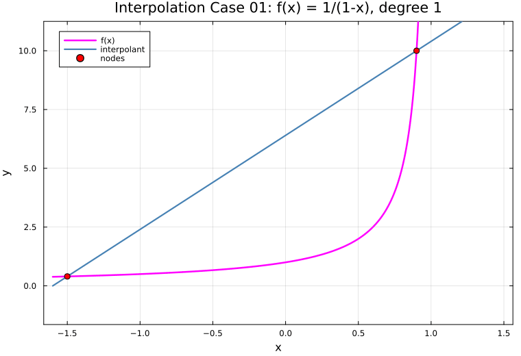
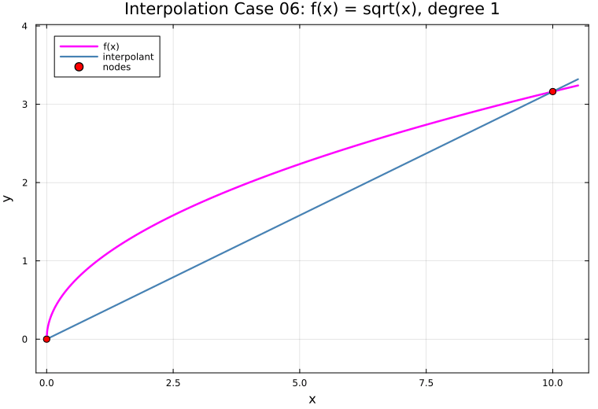
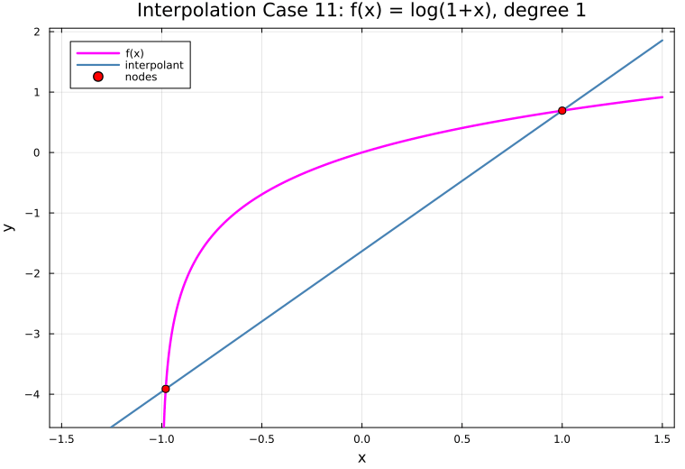
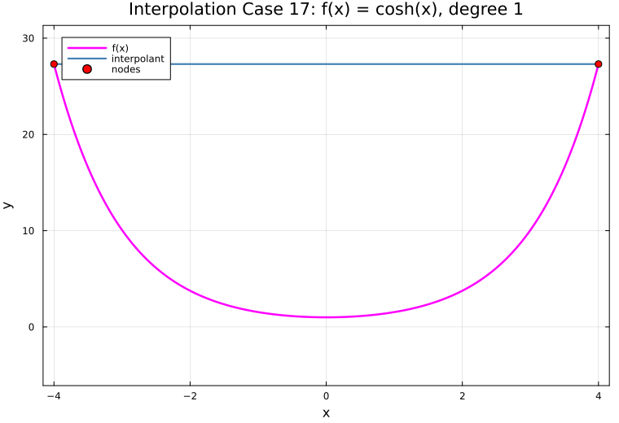
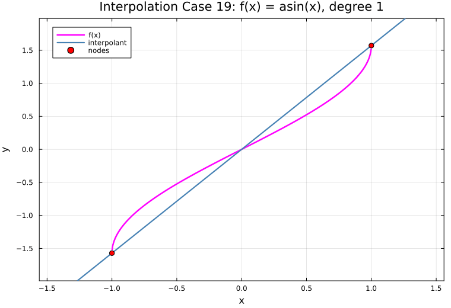
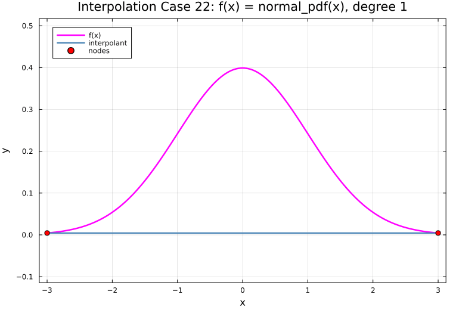
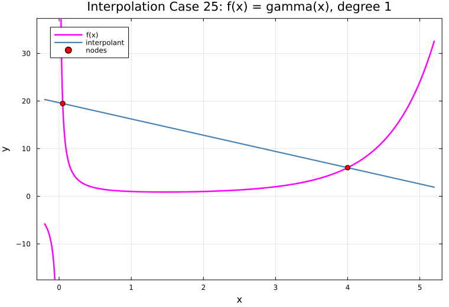
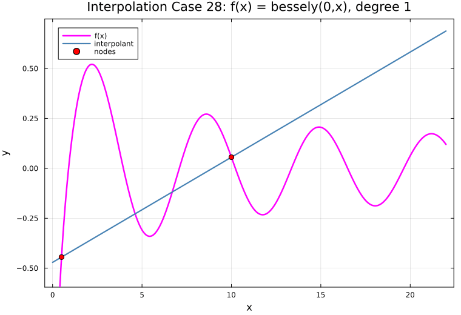

Lagrange Polynomial Interpolation and Approximation
Source inspiration: (Mathew 2000-2019).
Description
Lagrange interpolation solves this problem: given \(n+1\) points \((x_i, y_i)\) with distinct nodes \(x_i\), find the polynomial of degree at most \(n\) that passes through all of them. That polynomial exists and is unique, and when \(y_i = f(x_i)\) it is used to approximate \(f\). Given nodes \((x_i, y_i)\), the interpolation polynomial is
\[ P_n(x)=\sum_{i=0}^{n} y_i L_i(x), \qquad L_i(x)=\prod_{j\ne i} \frac{x-x_j}{x_i-x_j}. \]
Each \(L_i\) is 1 at \(x_i\) and 0 at the other nodes, so \(P_n(x_j) = y_j\). The animations evaluate it in the first barycentric form, \(P_n(x)=\ell(x)\sum_{i=0}^{n} \frac{w_i y_i}{x-x_i}\) with \(\ell(x)=\prod_{j=0}^{n}(x-x_j)\) and \(w_i=1/\prod_{j\ne i}(x_i-x_j)\). This is the same interpolant, and it stays accurate far outside the nodes, where the second barycentric form (a ratio of two such sums) gives values of the wrong sign in Cases 04 and 29.
Building \(P_n\) needs only distinct nodes; bounding its error needs a smooth \(f\). Mathews’ theorem: if \(f \in C^{n+1}[a, b]\) and the nodes lie in \([a, b]\), then for each \(x \in [a, b]\) there is a \(c\) in \([a, b]\) with
\[ f(x) - P_n(x) = \frac{f^{(n+1)}(c)}{(n+1)!}\,(x-x_0)(x-x_1)\cdots(x-x_n). \]
In general, for fixed \(n\) and equally spaced nodes with spacing \(h\), the error on \([x_0, x_n]\) is therefore \(O(h^{n+1})\); for \(n = 1\) it is at most \(h^2 \max|f''|/8\). Raising \(n\) on a fixed interval need not help. For \(e^x\) on \([-2, 3]\) (Case 15) it does: the largest error on the node interval falls from \(9.65\) at degree 1 to \(3.05 \times 10^{-10}\) at degree 15.
For \(1/(1+10x^2)\) on \([-1, 1]\) (Case 08), smooth on the whole real line, the error falls to \(0.135\) with 8 nodes and then grows, to \(0.485\) with 16 nodes, in oscillations next to the end nodes: Runge’s phenomenon. In Case 04, \(\sqrt{x}\) is not in \(C^1[0, 2]\), and the largest error on \([0, 2]\) falls only to \(0.0485\) at degree 15, next to \(x = 0\). Outside \([a, b]\) the theorem says nothing: in Case 04 at degree 15 the interpolant is about \(64.5\) at \(x = 2.5\), where \(\sqrt{2.5} \approx 1.58\).
Newton Interpolation builds the same polynomial from divided differences, Neville’s algorithm evaluates it at a point, Hermite Interpolation also matches slopes, Chebyshev nodes avoid Runge’s phenomenon, and Cubic Splines use cubic pieces instead of one high-degree polynomial.
The 29 animations below follow the legacy Mathews case ordering. Each case heading gives the function and the node interval \([a, b]\); the nodes are equally spaced from \(a\) to \(b\), endpoints included. Where the plot window is wider than \([a, b]\) (Cases 01–11, 14, 18–20 and 24–29), the interpolant beyond the nodes is extrapolation. In Case 19, \(\arcsin x\) is undefined outside \([-1, 1]\), so there only the interpolant is drawn.
Animations
Each animation raises the polynomial degree through 1, 2, 3, 4, 5, 7, 9, 11, 13 and 15 (2, 3, 4, 5, 6, 8, 10, 12, 14 and 16 nodes) for a fixed function and node interval. The degree in each title is the number of nodes minus one, the most the interpolant can have; its actual degree can be lower. With nodes symmetric about 0, the interpolant of an even \(f\) has only even powers of \(x\) and that of an odd \(f\) only odd powers, so in the even cases (08, 13, 17, 20 and 22) the frame titled degree 1 is a horizontal line and the frame titled degree 15 has degree 14. A curve that goes off-scale leaves the plot window, and \(f\) is broken at each of its poles (Cases 01–03, 14 and 24–26). Mathews’ own animations, of which only those for Cases 01 and 04 survive in the archive, went further, to degree 25 and degree 20 respectively, and drew a yellow bar on the \(x\)-axis, labelled “Tolerance ±0.05”, over an interval on which the interpolant is within \(0.05\) of \(f\); these frames stop at degree 15 and have no such bar.
Case 01: \(f(x)=1/(1-x)\), nodes on \([-1.5, 0.9]\)

Case 02: \(f(x)=1/(1+x)\), nodes on \([-0.9, 1.5]\)

Case 03: \(f(x)=1/(1-x)^2\), nodes on \([-1.5, 0.9]\)

Case 04: \(f(x)=\sqrt{x}\), nodes on \([0, 2]\)

Case 05: \(f(x)=\sqrt{x}\), nodes on \([0, 8]\)

Case 06: \(f(x)=\sqrt{x}\), nodes on \([0, 10]\)

Case 07: \(f(x)=1/\sqrt{1-x}\), nodes on \([-1.5, 0.95]\)

Case 08: \(f(x)=1/(1+10x^2)\), nodes on \([-1, 1]\)

Case 09: \(f(x)=\ln x\), nodes on \([0.02, 2]\)

Case 10: \(f(x)=\ln x\), nodes on \([0.02, 4]\)

Case 11: \(f(x)=\ln(1+x)\), nodes on \([-0.98, 1]\)

Case 12: \(f(x)=\sin x\), nodes on \([-3\pi, 3\pi]\)
With 2, 3 and 4 nodes every node is a multiple of \(\pi\), where \(\sin x = 0\), so the frames titled degree 1, 2 and 3 all show the line \(y = 0\).

Case 13: \(f(x)=\cos x\), nodes on \([-3\pi, 3\pi]\)
With 2 and 4 nodes every node is an odd multiple of \(\pi\), where \(\cos x = -1\), so the frames titled degree 1 and 3 show the line \(y = -1\).

Case 14: \(f(x)=\tan x\), nodes on \([-1.45, 1.45]\)
\(\tan x\) is odd and the nodes are symmetric about 0, so the middle of three nodes, \((0, 0)\), lies on the line through the two end nodes, and the frames titled degree 1 and 2 show the same line.

Case 15: \(f(x)=e^x\), nodes on \([-2, 3]\)

Case 16: \(f(x)=e^{-x}\cos x\), nodes on \([-2, 4]\)

Case 17: \(f(x)=\cosh x\), nodes on \([-4, 4]\)

Case 18: \(f(x)=\arctan x\), nodes on \([-2, 2]\)
\(\arctan x\) is odd and the nodes are symmetric about 0, so the middle of three nodes, \((0, 0)\), lies on the line through the two end nodes, and the frames titled degree 1 and 2 show the same line.

Case 19: \(f(x)=\arcsin x\), nodes on \([-1, 1]\)
\(\arcsin x\) is odd and the nodes are symmetric about 0, so the middle of three nodes, \((0, 0)\), lies on the line through the two end nodes, and the frames titled degree 1 and 2 show the same line.

Case 20: \(f(x)=J_0(x)\), nodes on \([-10, 10]\)

Case 21: \(f(x)=J_1(x)\), nodes on \([-10.2, 10.2]\)
\(J_1\) is odd and the nodes are symmetric about 0, so the middle of three nodes, \((0, 0)\), lies on the line through the two end nodes, and the frames titled degree 1 and 2 show the same line.

Case 22: \(f(x)=e^{-x^2/2}/\sqrt{2\pi}\), nodes on \([-3, 3]\)

Case 23: \(f(x)=\tfrac12\left(1+\operatorname{erf}(x/\sqrt2)\right)\), nodes on \([-3, 3]\)
\(f(x)-\tfrac12\) is odd and the nodes are symmetric about 0, so the middle of three nodes, \((0, \tfrac12)\), lies on the line through the two end nodes, and the frames titled degree 1 and 2 show the same line.

Case 24: \(f(x)=\Gamma(x)\), nodes on \([0.05, 2]\)

Case 25: \(f(x)=\Gamma(x)\), nodes on \([0.05, 4]\)

Case 26: \(f(x)=\Gamma(x)\), nodes on \([0.5, 5]\)

Case 27: \(f(x)=Y_0(x)\), nodes on \([0.5, 20]\)

Case 28: \(f(x)=Y_0(x)\), nodes on \([0.5, 10]\)

Case 29: \(f(x)=Y_0(x)\), nodes on \([0.5, 4]\)